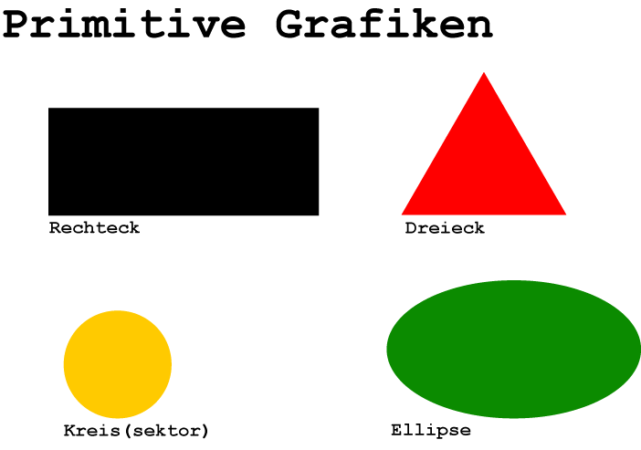

Was ist PyTamaro?
PyTamaro wurde an der Universität Lugano entwickelt. Hauptentwickler des Projekts sind Matthias Hauswirth, Professor am Software Institut, Luca Chiodini, Doktorierender am selbigen Institut und Alen Sugimoto, Bachelor Student auch am Institut für Sofware.
PyTamaro wurde entwickelt um das Programmieren lernen zu erleichtern. Das Programmierte wird direkt grafisch dargestellt, was erleichtern kann, einen Fehler zu finden. PyTamaro basiert auf Python.
QuelleWas sind primitive Grafiken?
Primitive Grafiken sind die Grundbausteine von PyTamaro. Mit diesen lassen sich theoretisch alle Grafiken erstellen.
Die Grafiken werden kombiniert, gedreht oder übereinander gelegt.
🠖 'API' Dokument Primitive Grafiken
Kombinatoren
Kombinatoren
Kombinatoren erlauben es primitive Grafiken beliebig zu kombinieren und zu neuen 'Figuren' zusammenzufügen.
Übersicht der verschiedenen Kombinatoren:
- above: Lässt zwei Figuren übereinander machen
- beside: Lässt zwei Figuren nebeneinander erscheinen.
- overlay: Lässt eine Figuren über der andere erscheinen.
- rotate: Lässt eine Figur um den Winkel x nach links (oben) drehen.